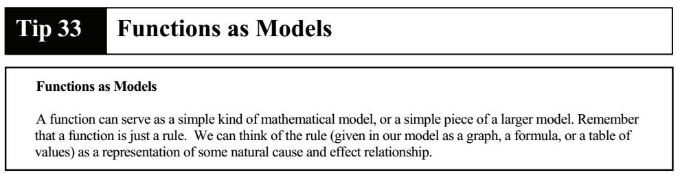
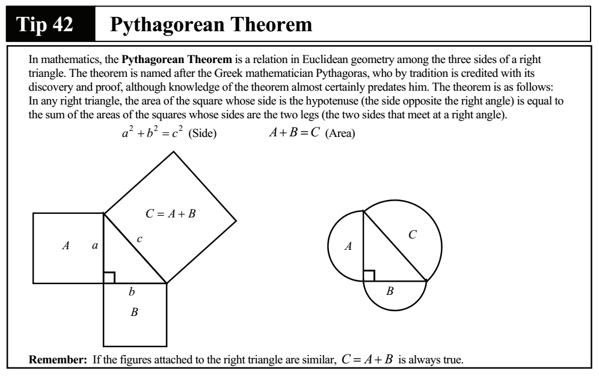
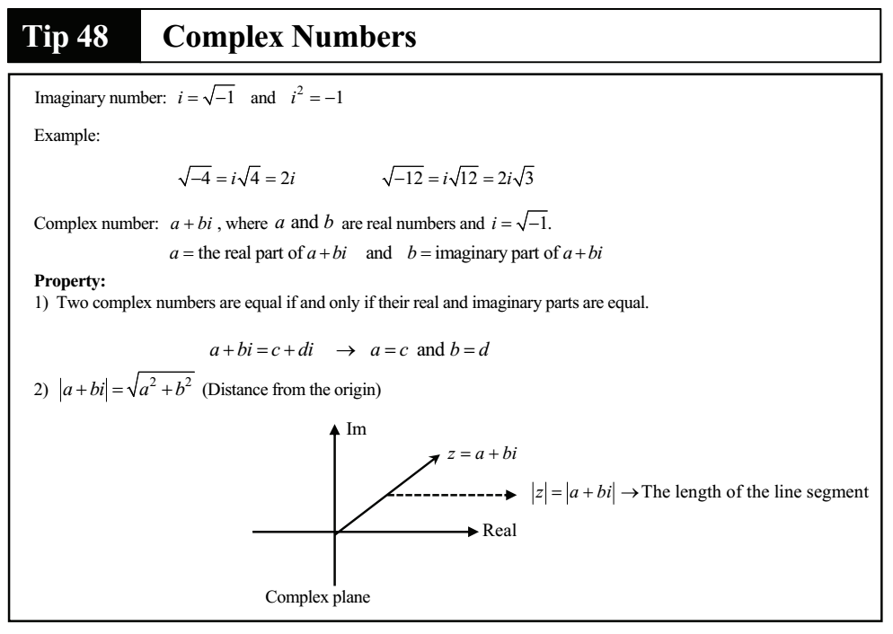

MATH Perfect Tips
1 Linear Function
2 Race of change
3 Parallel and Perpendicular Lines
4 Midpoint and Distance between Two Points
5 System of Linear Equations
6 Area enclosed by Lines
7 Line Reflection
8 Quadractic Function
9 System of Linear and Quadratic Equations
10 System of Linear Inequalities
11 System of Linear and Quadratice Inequalities
12 Area enclosed by Curves
13 Domain and Range
14 Composition of Function
15 Function of Undefined
16 Identical Equation
17 Even and Odd Functions
18 Factoring
19 Direct Variation
20 Inverse Variation
21 Sum and Product of the Roots of a Quadratic Equation
22 Remainder Theorem
23 Factor Theorem
24 Circles in the xy-plane
25 Average Speed
26 Percentage
27 Ratios and Proportion
28 Rations in Similar Figures
29 Percent of a Solution
30 Exponents
31 Exponential Growth and Decay Factor

32 Defined Operations
33 Functions as Models

34 Combine Rate of Work
35 Combined Range of Two Intervals
36 Absolute Value
37 Parallel Lines with Transversal
38 Triangle Inequality
39 Ration of areas of triangles with same height
40 Special Right Triangles
41 Proportion in a Right Triangle
42 Pythagorean Theorem

43 Transformation
44 Classifying a group in two different ways
45 Discriminant
46 Handshakes
47 Consecutive integers
48 Complex Numbers

49 Circles
50 Trigonometric Function and Cofunction
51 Asymptotes
52 Probability
53 Geometry Probability
54 Data Interpretation
55 Box-and_Whisker Plot
56 Linear Correlation Coefficient